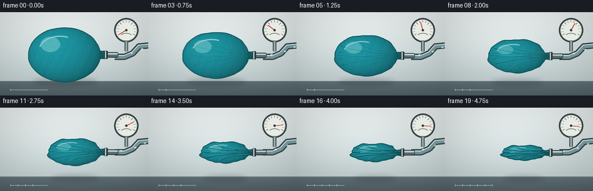
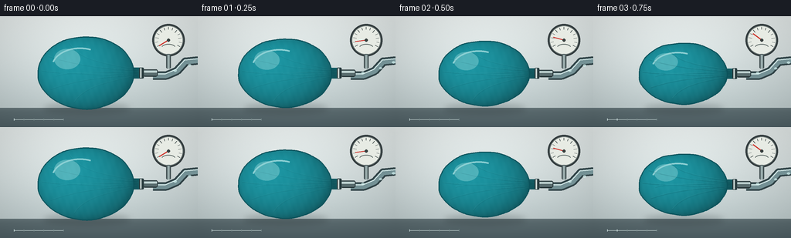

CODING AGENTS AS PIXEL WORLD MODELS
traex/GPT-5.6-Sol · phygen_020
点击播放 · 原生 RGB 像素
逐轮保存的候选
回放视频、检查图与代码变化。
每份候选均可单独播放。实际图片检查记录在下方工具轨迹中。
候选 01播放与检查图
点击播放 · 原生 RGB 像素


展开代码变化
--- 上一保存版本
+++ 本次保存版本
@@ -0,0 +1,239 @@
+from pathlib import Path
+import math
+import numpy as np
+from PIL import Image, ImageDraw, ImageFilter
+import artifact_io
+
+# Supersampled procedural rendering: a latex balloon is evacuated through an
+# airtight valve. Everything is deterministic and generated from geometry.
+W, H, N = 256, 144, 20
+S = 3
+WW, HH = W*S, H*S
+rng = np.random.default_rng(20261109)
+
+
+def sc(v):
+ return int(round(v*S))
+
+
+def pts_scaled(points):
+ return [(sc(x), sc(y)) for x, y in points]
+
+
+def bezier(draw, points, fill, width, steps=60):
+ p = np.asarray(points, dtype=float)
+ out = []
+ if len(points) == 4:
+ for z in np.linspace(0, 1, steps):
+ q = (1-z)**3*p[0] + 3*(1-z)**2*z*p[1] + 3*(1-z)*z*z*p[2] + z**3*p[3]
+ out.append((sc(q[0]), sc(q[1])))
+ else:
+ out = pts_scaled(points)
+ draw.line(out, fill=fill, width=max(1, sc(width)), joint='curve')
+
+
+def background(frame_i):
+ yy, xx = np.mgrid[0:HH, 0:WW]
+ y = yy / S
+ x = xx / S
+ # Clean lab wall, soft pool of light, and a darker workbench.
+ wall = np.empty((HH, WW, 3), dtype=np.float32)
+ top = np.array([226, 232, 231.], dtype=np.float32)
+ bot = np.array([186, 199, 200.], dtype=np.float32)
+ f = np.clip(y / 122, 0, 1)[..., None]
+ wall[:] = top*(1-f) + bot*f
+ glow = 13*np.exp(-(((x-105)/100)**2 + ((y-54)/65)**2))
+ wall += glow[..., None]
+ # Stable fine photographic grain (not frame-to-frame noise).
+ grain = rng_for_bg.normal(0, 0.7, (HH, WW, 1))
+ wall += grain
+ bench = y >= 119
+ bval = np.array([94., 110., 114.]) + (y[..., None]-119)*np.array([-.65, -.62, -.57])
+ wall = np.where(bench[..., None], bval, wall)
+ # bench highlight and vignette
+ wall += (5*np.exp(-((y-120)/2.2)**2))[..., None]
+ vignette = 1 - .10*np.clip(((x-128)/160)**2 + ((y-72)/105)**2, 0, 1)
+ wall *= vignette[..., None]
+ return Image.fromarray(np.uint8(np.clip(wall, 0, 255)), 'RGB')
+
+
+# Keep exact grain identical across the sequence.
+rng_for_bg = np.random.default_rng(8401)
+_bg_master = background(0)
+
+
+def draw_environment(im, t, fi):
+ d = ImageDraw.Draw(im, 'RGBA')
+ # Rear vacuum hose: thick outer wall, inner glassy highlight.
+ path = [(198,77), (215,77), (229,71), (240,59), (260,57)]
+ d.line(pts_scaled(path), fill=(47,65,69,255), width=sc(11), joint='curve')
+ d.line(pts_scaled(path), fill=(116,145,149,255), width=sc(7), joint='curve')
+ d.line(pts_scaled([(199,74.5),(214,74.5),(228,68.5),(239,56.7),(260,54.7)]),
+ fill=(213,233,232,150), width=sc(1.2), joint='curve')
+ # Moving pale slugs in the transparent hose make extraction direction legible.
+ flow = Image.new('RGBA', (WW,HH), (0,0,0,0)); fd = ImageDraw.Draw(flow, 'RGBA')
+ phase = (fi * 0.16) % 1
+ for k in range(3):
+ q = (phase + k/3) % 1
+ # piecewise approximation along hose
+ if q < .42:
+ x = 202 + 31*(q/.42); y = 76 - 7*(q/.42)
+ else:
+ x = 233 + 29*((q-.42)/.58); y = 69 - 13*((q-.42)/.58)
+ fd.ellipse((sc(x-2.0),sc(y-1.4),sc(x+2.0),sc(y+1.4)), fill=(218,249,246,165))
+ im.alpha_composite(flow)
+ d = ImageDraw.Draw(im, 'RGBA')
+
+ # Vacuum gauge mounted above the line.
+ gx, gy, gr = 218, 31, 19
+ d.ellipse((sc(gx-gr-2),sc(gy-gr-2),sc(gx+gr+2),sc(gy+gr+2)), fill=(49,58,60,235))
+ d.ellipse((sc(gx-gr),sc(gy-gr),sc(gx+gr),sc(gy+gr)), fill=(231,235,228,255), outline=(102,113,112,255), width=sc(1))
+ for a in np.linspace(math.radians(150), math.radians(390), 13):
+ r1 = 13 if abs((a-math.radians(150))%(math.radians(40))) < .03 else 14
+ x1,y1=gx+r1*math.cos(a),gy+r1*math.sin(a)
+ x2,y2=gx+17*math.cos(a),gy+17*math.sin(a)
+ d.line((sc(x1),sc(y1),sc(x2),sc(y2)), fill=(49,62,62,255), width=sc(.7))
+ # Needle sweeps rapidly toward high vacuum.
+ ease = 1-(1-t)**2.2
+ a = math.radians(148 + 218*ease)
+ d.line((sc(gx),sc(gy),sc(gx+14*math.cos(a)),sc(gy+14*math.sin(a))), fill=(206,51,43,255), width=sc(1.5))
+ d.ellipse((sc(gx-2),sc(gy-2),sc(gx+2),sc(gy+2)), fill=(54,62,61,255))
+ # Tiny gauge legend, drawn geometrically to remain crisp at this resolution.
+ d.arc((sc(gx-9),sc(gy+5),sc(gx+9),sc(gy+14)), 195, 345, fill=(90,102,100,190), width=sc(1))
+ # short gauge stem
+ d.rounded_rectangle((sc(215),sc(49),sc(221),sc(68)), radius=sc(2), fill=(68,82,84,255))
+ d.rectangle((sc(216.5),sc(50),sc(219.5),sc(68)), fill=(153,171,171,255))
+
+
+def balloon_outline(t):
+ # Volume drops very rapidly at first, then the remaining membrane wrinkles.
+ e = 1 - (1-t)**1.35
+ cx = 111 + 25*e
+ cy = 73.5 + 4.3*e
+ rx = 62*(1 - .39*e)
+ ry = 47*(1 - .715*e)
+ theta = np.linspace(0, 2*np.pi, 420, endpoint=False)
+ # Wrinkle amplitudes emerge as internal air pressure disappears.
+ amp = .010 + .105*e**1.65
+ wav = (.46*np.sin(5*theta+.25) + .28*np.sin(9*theta+1.1) +
+ .17*np.sin(14*theta-.7) + .10*np.sin(19*theta+1.8))
+ # Keep the valve-side pole comparatively constrained by the clamp.
+ valve_constraint = .32 + .68*(1 - np.exp(-((np.angle(np.exp(1j*theta))-0)/.52)**2))
+ radial = 1 + amp*wav*valve_constraint
+ # Two broad atmospheric-pressure buckles, especially visible mid-collapse.
+ radial -= (.075*e**1.4*np.exp(-((theta-1.48)/.34)**2) +
+ .060*e**1.4*np.exp(-((theta-4.68)/.30)**2))
+ x = cx + rx*np.cos(theta)*radial
+ y = cy + ry*np.sin(theta)*radial
+ return list(zip(x,y)), (cx,cy,rx,ry,e)
+
+
+def render(fi):
+ t = fi/(N-1)
+ im = _bg_master.convert('RGBA')
+ # Shadow is widest when inflated and tightens as the balloon loses volume.
+ _, pars = balloon_outline(t)
+ cx,cy,rx,ry,e = pars
+ shadow = Image.new('RGBA',(WW,HH),(0,0,0,0)); sd=ImageDraw.Draw(shadow,'RGBA')
+ shx1, shx2 = cx-rx*.88, cx+rx*.92
+ sd.ellipse((sc(shx1),sc(113+4*e),sc(shx2),sc(126+2*e)), fill=(27,39,41,int(54-10*e)))
+ shadow = shadow.filter(ImageFilter.GaussianBlur(sc(4.0)))
+ im.alpha_composite(shadow)
+
+ draw_environment(im,t,fi)
+
+ poly, pars = balloon_outline(t)
+ cx,cy,rx,ry,e = pars
+ # Balloon mask includes a tapered neck that stays airtight around the nozzle.
+ mask = Image.new('L',(WW,HH),0); md=ImageDraw.Draw(mask)
+ md.polygon(pts_scaled(poly), fill=255)
+ neck_top = cy - (7.0-1.4*e)
+ neck_bot = cy + (7.0-1.0*e)
+ neck = [(cx+rx*.83,cy-7*(1-.45*e)),(181,neck_top),(187,cy-4.1),(187,cy+4.1),(181,neck_bot),(cx+rx*.83,cy+7*(1-.45*e))]
+ md.polygon(pts_scaled(neck), fill=255)
+
+ # Latex shading: translucent teal, curved diffuse illumination and thinning.
+ yy,xx=np.mgrid[0:HH,0:WW]; X=xx/S; Y=yy/S
+ nx=(X-cx)/max(rx,1); ny=(Y-cy)/max(ry,1)
+ sphere=np.sqrt(np.clip(1-nx*nx-ny*ny,0,1))
+ light = .68 + .28*sphere + .10*(-nx) - .10*ny
+ # darker and slightly less saturated as folds stack on the collapsed membrane
+ c0=np.array([29,151,164.])*(1-.10*e)+np.array([22,119,128.])*(.10*e)
+ tex = np.empty((HH,WW,4),dtype=np.uint8)
+ fixed = (np.sin(X*.39+Y*.18)+np.sin(X*.81-Y*.27+1.7))*.9
+ for k in range(3): tex[...,k]=np.uint8(np.clip(c0[k]*light+fixed,0,255))
+ tex[...,3]=np.asarray(mask)
+ latex=Image.fromarray(tex,'RGBA')
+ im.alpha_composite(latex)
+
+ # Soft reflected strip and broad latex gleam, both clipped to the silhouette.
+ gleam = Image.new('RGBA',(WW,HH),(0,0,0,0)); gd=ImageDraw.Draw(gleam,'RGBA')
+ gd.ellipse((sc(cx-rx*.66),sc(cy-ry*.66),sc(cx-rx*.12),sc(cy-ry*.10)), fill=(217,255,250,int(72*(1-.3*e))))
+ gd.arc((sc(cx-rx*.72),sc(cy-ry*.70),sc(cx+rx*.48),sc(cy+ry*.40)), 197, 292, fill=(224,255,252,145), width=sc(max(1.0,2.1-1.0*e)))
+ gleam.putalpha(Image.fromarray(np.minimum(np.asarray(gleam.getchannel('A')),np.asarray(mask)).astype(np.uint8)))
+ im.alpha_composite(gleam)
+
+ # Wrinkle valleys and adjacent highlights. Their radial convergence toward
+ # the nozzle communicates the pressure force rather than simple shrinking.
+ dark=Image.new('RGBA',(WW,HH),(0,0,0,0)); dd=ImageDraw.Draw(dark,'RGBA')
+ strength=int(25+145*e**1.45)
+ wrinkle_specs=[
+ ((cx-rx*.78,cy-ry*.45),(cx-rx*.25,cy-ry*.23),(cx+rx*.30,cy-ry*.10),(177,cy-3.0)),
+ ((cx-rx*.92,cy-ry*.05),(cx-rx*.30,cy+ry*.08),(cx+rx*.35,cy-ry*.03),(179,cy-1.0)),
+ ((cx-rx*.73,cy+ry*.46),(cx-rx*.15,cy+ry*.18),(cx+rx*.38,cy+ry*.13),(177,cy+3.0)),
+ ((cx-rx*.35,cy-ry*.82),(cx-rx*.13,cy-ry*.32),(cx+rx*.42,cy-ry*.26),(173,cy-4.5)),
+ ((cx-rx*.24,cy+ry*.82),(cx-rx*.04,cy+ry*.39),(cx+rx*.42,cy+ry*.27),(174,cy+4.5)),
+ ((cx-rx*.63,cy+ry*.10),(cx-rx*.24,cy-ry*.08),(cx+rx*.13,cy+ry*.14),(170,cy+1.0)),
+ ]
+ for j,p in enumerate(wrinkle_specs):
+ bezier(dd,p,(5,64,73,strength if j<3 else int(strength*.72)),1.0+1.0*e)
+ p2=[(a,b-1.15) for a,b in p]
+ bezier(dd,p2,(142,231,228,int(strength*.48)),.65+e*.45)
+ # Late microfolds running across the loose sheet.
+ for j in range(7):
+ phase=j*.93
+ x0=cx-rx*(.68-j*.045)
+ y0=cy + (j-3)*ry*.19
+ p=[(x0,y0),(cx-rx*.20,y0+2.2*math.sin(phase)),(cx+rx*.34,cy+(j-3)*1.05),(174,cy+(j-3)*.55)]
+ bezier(dd,p,(8,70,77,int(100*e**2)),.7)
+ clipped=np.minimum(np.asarray(dark.getchannel('A')),np.asarray(mask)).astype(np.uint8)
+ dark.putalpha(Image.fromarray(clipped))
+ im.alpha_composite(dark)
+
+ # Silhouette rim: dark pressure-fold edge, with a cool transmitted-light edge.
+ od=ImageDraw.Draw(im,'RGBA')
+ closed=pts_scaled(poly+[poly[0]])
+ od.line(closed,fill=(11,82,91,220),width=sc(1.25),joint='curve')
+ # A few short puckers at the loose left edge in the late stage.
+ if e>.32:
+ for j in range(4):
+ a=(j-1.5)*.26
+ x=cx-rx*.88+abs(j-1.5)*1.8
+ y=cy+a*ry*1.25
+ od.line((sc(x),sc(y),sc(x+7+3*e),sc(y-a*6)),fill=(9,75,82,int(80+90*e)),width=sc(.8))
+
+ # Stainless nozzle and two compression rings are in front of the latex neck.
+ d=ImageDraw.Draw(im,'RGBA')
+ d.rounded_rectangle((sc(183),sc(cy-4.4),sc(204),sc(cy+4.4)), radius=sc(2), fill=(89,108,110,255), outline=(43,57,60,255), width=sc(1))
+ d.rectangle((sc(185),sc(cy-2.8),sc(203),sc(cy-.6)), fill=(191,211,210,235))
+ d.rounded_rectangle((sc(180),sc(cy-7.0),sc(186),sc(cy+7.0)), radius=sc(1.3), fill=(41,59,62,255))
+ d.rectangle((sc(181.2),sc(cy-6.3),sc(183),sc(cy+6.3)),fill=(201,214,211,230))
+ d.line((sc(187),sc(cy+4.5),sc(202),sc(cy+4.5)), fill=(27,42,45,240), width=sc(.7))
+
+ # Table-edge time-lapse markers (unlabelled, documentary rather than UI-like).
+ d.line((sc(18),sc(134),sc(82),sc(134)), fill=(184,200,200,120), width=sc(.6))
+ for k in range(6):
+ x=18+k*12.8
+ col=(218,237,234,210) if k/5 <= t+.05 else (112,132,133,130)
+ d.line((sc(x),sc(132.5),sc(x),sc(135.5)),fill=col,width=sc(.8))
+
+ # Downsample with high-quality antialiasing.
+ return np.asarray(im.convert('RGB').resize((W,H),Image.Resampling.LANCZOS),dtype=np.uint8)
+
+
+def main():
+ frames=np.stack([render(i) for i in range(N)],axis=0).astype(np.uint8)
+ artifact_io.save(frames,Path(__file__).resolve().parent)
+
+if __name__=='__main__':
+ main()
可观测工具轨迹
实际执行的命令与返回图片。
命令 1exit 0
/bin/bash -lc "cat prompt.txt && printf '\\n--- GENERATION_RULES.md ---\\n' && cat GENERATION_RULES.md"
命令 2exit 0
/bin/bash -lc "cat task_spec.json && printf '\\n--- FILES ---\\n' && find . -maxdepth 2 -type f -printf '%p\\n' | sort"
命令 3exit 0
/bin/bash -lc 'command -v ffmpeg; command -v blender; command -v python3; ffmpeg -version 2>/dev/null | head -3; blender --version 2>/dev/null | head -3'
命令 4exit 0
/bin/bash -lc 'cat artifact_io.py'
命令 5exit 0
/bin/bash -lc "cat > generate.py <<'PY'
from pathlib import Path
import math
import numpy as np
from PIL import Image, ImageDraw, ImageFilter
import artifact_io
# Supersampled procedural rendering: a latex balloon is evacuated through an
# airtight valve. Everything is deterministic and generated from geometry.
W, H, N = 256, 144, 20
S = 3
WW, HH = W*S, H*S
rng = np.random.default_rng(20261109)
def sc(v):
return int(round(v*S))
def pts_scaled(points):
return [(sc(x), sc(y)) for x, y in points]
def bezier(draw, points, fill, width, steps=60):
p = np.asarray(points, dtype=float)
out = []
if len(points) == 4:
for z in np.linspace(0, 1, steps):
q = (1-z)**3*p[0] + 3*(1-z)**2*z*p[1] + 3*(1-z)*z*z*p[2] + z**3*p[3]
out.append((sc(q[0]), sc(q[1])))
else:
out = pts_scaled(points)
draw.line(out, fill=fill, width=max(1, sc(width)), joint='curve')
def background(frame_i):
yy, xx = np.mgrid[0:HH, 0:WW]
y = yy / S
x = xx / S
# Clean lab wall, soft pool of light, and a darker workbench.
wall = np.empty((HH, WW, 3), dtype=np.float32)
top = np.array([226, 232, 231.], dtype=np.float32)
bot = np.array([186, 199, 200.], dtype=np.float32)
f = np.clip(y / 122, 0, 1)[..., None]
wall[:] = top*(1-f) + bot*f
glow = 13*np.exp(-(((x-105)/100)**2 + ((y-54)/65)**2))
wall += glow[..., None]
# Stable fine photographic grain (not frame-to-frame noise).
grain = rng_for_bg.normal(0, 0.7, (HH, WW, 1))
wall += grain
bench = y >= 119
bval = np.array([94., 110., 114.]) + (y[..., None]-119)*np.array([-.65, -.62, -.57])
wall = np.where(bench[..., None], bval, wall)
# bench highlight and vignette
wall += (5*np.exp(-((y-120)/2.2)**2))[..., None]
vignette = 1 - .10*np.clip(((x-128)/160)**2 + ((y-72)/105)**2, 0, 1)
wall *= vignette[..., None]
return Image.fromarray(np.uint8(np.clip(wall, 0, 255)), 'RGB')
# Keep exact grain identical across the sequence.
rng_for_bg = np.random.default_rng(8401)
_bg_master = background(0)
def draw_environment(im, t, fi):
d = ImageDraw.Draw(im, 'RGBA')
# Rear vacuum hose: thick outer wall, inner glassy highlight.
path = [(198,77), (215,77), (229,71), (240,59), (260,57)]
d.line(pts_scaled(path), fill=(47,65,69,255), width=sc(11), joint='curve')
d.line(pts_scaled(path), fill=(116,145,149,255), width=sc(7), joint='curve')
d.line(pts_scaled([(199,74.5),(214,74.5),(228,68.5),(239,56.7),(260,54.7)]),
fill=(213,233,232,150), width=sc(1.2), joint='curve')
# Moving pale slugs in the transparent hose make extraction direction legible.
flow = Image.new('RGBA', (WW,HH), (0,0,0,0)); fd = ImageDraw.Draw(flow, 'RGBA')
phase = (fi * 0.16) % 1
for k in range(3):
q = (phase + k/3) % 1
# piecewise approximation along hose
if q < .42:
x = 202 + 31*(q/.42); y = 76 - 7*(q/.42)
else:
x = 233 + 29*((q-.42)/.58); y = 69 - 13*((q-.42)/.58)
fd.ellipse((sc(x-2.0),sc(y-1.4),sc(x+2.0),sc(y+1.4)), fill=(218,249,246,165))
im.alpha_composite(flow)
d = ImageDraw.Draw(im, 'RGBA')
# Vacuum gauge mounted above the line.
gx, gy, gr = 218, 31, 19
d.ellipse((sc(gx-gr-2),sc(gy-gr-2),sc(gx+gr+2),sc(gy+gr+2)), fill=(49,58,60,235))
d.ellipse((sc(gx-gr),sc(gy-gr),sc(gx+gr),sc(gy+gr)), fill=(231,235,228,255), outline=(102,113,112,255), width=sc(1))
for a in np.linspace(math.radians(150), math.radians(390), 13):
r1 = 13 if abs((a-math.radians(150))%(math.radians(40))) < .03 else 14
x1,y1=gx+r1*math.cos(a),gy+r1*math.sin(a)
x2,y2=gx+17*math.cos(a),gy+17*math.sin(a)
d.line((sc(x1),sc(y1),sc(x2),sc(y2)), fill=(49,62,62,255), width=sc(.7))
# Needle sweeps rapidly toward high vacuum.
ease = 1-(1-t)**2.2
a = math.radians(148 + 218*ease)
d.line((sc(gx),sc(gy),sc(gx+14*math.cos(a)),sc(gy+14*math.sin(a))), fill=(206,51,43,255), width=sc(1.5))
d.ellipse((sc(gx-2),sc(gy-2),sc(gx+2),sc(gy+2)), fill=(54,62,61,255))
# Tiny gauge legend, drawn geometrically to remain crisp at this resolution.
d.arc((sc(gx-9),sc(gy+5),sc(gx+9),sc(gy+14)), 195, 345, fill=(90,102,100,190), width=sc(1))
# short gauge stem
d.rounded_rectangle((sc(215),sc(49),sc(221),sc(68)), radius=sc(2), fill=(68,82,84,255))
d.rectangle((sc(216.5),sc(50),sc(219.5),sc(68)), fill=(153,171,171,255))
def balloon_outline(t):
# Volume drops very rapidly at first, then the remaining membrane wrinkles.
e = 1 - (1-t)**1.35
cx = 111 + 25*e
cy = 73.5 + 4.3*e
rx = 62*(1 - .39*e)
ry = 47*(1 - .715*e)
theta = np.linspace(0, 2*np.pi, 420, endpoint=False)
# Wrinkle amplitudes emerge as internal air pressure disappears.
amp = .010 + .105*e**1.65
wav = (.46*np.sin(5*theta+.25) + .28*np.sin(9*theta+1.1) +
.17*np.sin(14*theta-.7) + .10*np.sin(19*theta+1.8))
# Keep the valve-side pole comparatively constrained by the clamp.
valve_constraint = .32 + .68*(1 - np.exp(-((np.angle(np.exp(1j*theta))-0)/.52)**2))
radial = 1 + amp*wav*valve_constraint
# Two broad atmospheric-pressure buckles, especially visible mid-collapse.
radial -= (.075*e**1.4*np.exp(-((theta-1.48)/.34)**2) +
.060*e**1.4*np.exp(-((theta-4.68)/.30)**2))
x = cx + rx*np.cos(theta)*radial
y = cy + ry*np.sin(theta)*radial
return list(zip(x,y)), (cx,cy,rx,ry,e)
def render(fi):
t = fi/(N-1)
im = _bg_master.convert('RGBA')
# Shadow is widest when inflated and tightens as the balloon loses volume.
_, pars = balloon_outline(t)
cx,cy,rx,ry,e = pars
shadow = Image.new('RGBA',(WW,HH),(0,0,0,0)); sd=ImageDraw.Draw(shadow,'RGBA')
shx1, shx2 = cx-rx*.88, cx+rx*.92
sd.ellipse((sc(shx1),sc(113+4*e),sc(shx2),sc(126+2*e)), fill=(27,39,41,int(54-10*e)))
shadow = shadow.filter(ImageFilter.GaussianBlur(sc(4.0)))
im.alpha_composite(shadow)
draw_environment(im,t,fi)
poly, pars = balloon_outline(t)
cx,cy,rx,ry,e = pars
# Balloon mask includes a tapered neck that stays airtight around the nozzle.
mask = Image.new('L',(WW,HH),0); md=ImageDraw.Draw(mask)
md.polygon(pts_scaled(poly), fill=255)
neck_top = cy - (7.0-1.4*e)
neck_bot = cy + (7.0-1.0*e)
neck = [(cx+rx*.83,cy-7*(1-.45*e)),(181,neck_top),(187,cy-4.1),(187,cy+4.1),(181,neck_bot),(cx+rx*.83,cy+7*(1-.45*e))]
md.polygon(pts_scaled(neck), fill=255)
# Latex shading: translucent teal, curved diffuse illumination and thinning.
yy,xx=np.mgrid[0:HH,0:WW]; X=xx/S; Y=yy/S
nx=(X-cx)/max(rx,1); ny=(Y-cy)/max(ry,1)
sphere=np.sqrt(np.clip(1-nx*nx-ny*ny,0,1))
light = .68 + .28*sphere + .10*(-nx) - .10*ny
# darker and slightly less saturated as folds stack on the collapsed membrane
c0=np.array([29,151,164.])*(1-.10*e)+np.array([22,119,128.])*(.10*e)
tex = np.empty((HH,WW,4),dtype=np.uint8)
fixed = (np.sin(X*.39+Y*.18)+np.sin(X*.81-Y*.27+1.7))*.9
for k in range(3): tex[...,k]=np.uint8(np.clip(c0[k]*light+fixed,0,255))
tex[...,3]=np.asarray(mask)
latex=Image.fromarray(tex,'RGBA')
im.alpha_composite(latex)
# Soft reflected strip and broad latex gleam, both clipped to the silhouette.
gleam = Image.new('RGBA',(WW,HH),(0,0,0,0)); gd=ImageDraw.Draw(gleam,'RGBA')
gd.ellipse((sc(cx-rx*.66),sc(cy-ry*.66),sc(cx-rx*.12),sc(cy-ry*.10)), fill=(217,255,250,int(72*(1-.3*e))))
gd.arc((sc(cx-rx*.72),sc(cy-ry*.70),sc(cx+rx*.48),sc(cy+ry*.40)), 197, 292, fill=(224,255,252,145), width=sc(max(1.0,2.1-1.0*e)))
gleam.putalpha(Image.fromarray(np.minimum(np.asarray(gleam.getchannel('A')),np.asarray(mask)).astype(np.uint8)))
im.alpha_composite(gleam)
# Wrinkle valleys and adjacent highlights. Their radial convergence toward
# the nozzle communicates the pressure force rather than simple shrinking.
dark=Image.new('RGBA',(WW,HH),(0,0,0,0)); dd=ImageDraw.Draw(dark,'RGBA')
strength=int(25+145*e**1.45)
wrinkle_specs=[
((cx-rx*.78,cy-ry*.45),(cx-rx*.25,cy-ry*.23),(cx+rx*.30,cy-ry*.10),(177,cy-3.0)),
((cx-rx*.92,cy-ry*.05),(cx-rx*.30,cy+ry*.08),(cx+rx*.35,cy-ry*.03),(179,cy-1.0)),
((cx-rx*.73,cy+ry*.46),(cx-rx*.15,cy+ry*.18),(cx+rx*.38,cy+ry*.13),(177,cy+3.0)),
((cx-rx*.35,cy-ry*.82),(cx-rx*.13,cy-ry*.32),(cx+rx*.42,cy-ry*.26),(173,cy-4.5)),
((cx-rx*.24,cy+ry*.82),(cx-rx*.04,cy+ry*.39),(cx+rx*.42,cy+ry*.27),(174,cy+4.5)),
((cx-rx*.63,cy+ry*.10),(cx-rx*.24,cy-ry*.08),(cx+rx*.13,cy+ry*.14),(170,cy+1.0)),
]
for j,p in enumerate(wrinkle_specs):
bezier(dd,p,(5,64,73,strength if j<3 else int(strength*.72)),1.0+1.0*e)
p2=[(a,b-1.15) for a,b in p]
bezier(dd,p2,(142,231,228,int(strength*.48)),.65+e*.45)
# Late microfolds running across the loose sheet.
for j in range(7):
phase=j*.93
x0=cx-rx*(.68-j*.045)
y0=cy + (j-3)*ry*.19
p=[(x0,y0),(cx-rx*.20,y0+2.2*math.sin(phase)),(cx+rx*.34,cy+(j-3)*1.05),(174,cy+(j-3)*.55)]
bezier(dd,p,(8,70,77,int(100*e**2)),.7)
clipped=np.minimum(np.asarray(dark.getchannel('A')),np.asarray(mask)).astype(np.uint8)
dark.putalpha(Image.fromarray(clipped))
im.alpha_composite(dark)
# Silhouette rim: dark pressure-fold edge, with a cool transmitted-light edge.
od=ImageDraw.Draw(im,'RGBA')
closed=pts_scaled(poly+[poly[0]])
od.line(closed,fill=(11,82,91,220),width=sc(1.25),joint='curve')
# A few short puckers at the loose left edge in the late stage.
if e>.32:
for j in range(4):
a=(j-1.5)*.26
x=cx-rx*.88+abs(j-1.5)*1.8
y=cy+a*ry*1.25
od.line((sc(x),sc(y),sc(x+7+3*e),sc(y-a*6)),fill=(9,75,82,int(80+90*e)),width=sc(.8))
# Stainless nozzle and two compression rings are in front of the latex neck.
d=ImageDraw.Draw(im,'RGBA')
d.rounded_rectangle((sc(183),sc(cy-4.4),sc(204),sc(cy+4.4)), radius=sc(2), fill=(89,108,110,255), outline=(43,57,60,255), width=sc(1))
d.rectangle((sc(185),sc(cy-2.8),sc(203),sc(cy-.6)), fill=(191,211,210,235))
d.rounded_rectangle((sc(180),sc(cy-7.0),sc(186),sc(cy+7.0)), radius=sc(1.3), fill=(41,59,62,255))
d.rectangle((sc(181.2),sc(cy-6.3),sc(183),sc(cy+6.3)),fill=(201,214,211,230))
d.line((sc(187),sc(cy+4.5),sc(202),sc(cy+4.5)), fill=(27,42,45,240), width=sc(.7))
# Table-edge time-lapse markers (unlabelled, documentary rather than UI-like).
d.line((sc(18),sc(134),sc(82),sc(134)), fill=(184,200,200,120), width=sc(.6))
for k in range(6):
x=18+k*12.8
col=(218,237,234,210) if k/5 <= t+.05 else (112,132,133,130)
d.line((sc(x),sc(132.5),sc(x),sc(135.5)),fill=col,width=sc(.8))
# Downsample with high-quality antialiasing.
return np.asarray(im.convert('RGB').resize((W,H),Image.Resampling.LANCZOS),dtype=np.uint8)
def main():
frames=np.stack([render(i) for i in range(N)],axis=0).astype(np.uint8)
artifact_io.save(frames,Path(__file__).resolve().parent)
if __name__=='__main__':
main()
PY
python3 generate.py
python3 - <<'PY'
from pathlib import Path
import numpy as np
from PIL import Image
p=np.load('pixels.npz')['pixels']
print('pixels',p.shape,p.dtype,'bytes',Path('pixels.npz').stat().st_size)
for i in [0,5,10,15,19]:
a=np.asarray(Image.open(f'frames/{i:02}.png'))
print(i,a.shape,a.mean(axis=(0,1)).round(1),a.min(),a.max())
PY"命令 6exit 0
/bin/bash -lc 'python3 -m py_compile generate.py artifact_io.py && test -f index.html && test -f inspection.png && test -f pixels.npz && test "$(find frames -name '"'*.png' | wc -l)\" -eq 20 && echo 'artifact validation: OK' && du -h pixels.npz index.html inspection.png frames/*.png | tail -5"
命令 7exit 0
/bin/bash -lc "python3 - <<'PY'
import numpy as np
from PIL import Image
ims=np.stack([np.asarray(Image.open(f'frames/{i:02}.png')).astype(float) for i in range(20)])
mad=np.abs(np.diff(ims,axis=0)).mean((1,2,3))
print('consecutive MAD:',np.round(mad,2))
print('first-last MAD:',np.abs(ims[-1]-ims[0]).mean().round(2))
# Segment saturated teal latex, report bounding boxes and approximate areas.
for i in [0,3,6,9,12,15,19]:
a=ims[i]; m=(a[:,:,1]>a[:,:,0]*1.35)&(a[:,:,2]>a[:,:,0]*1.35)&(a[:,:,1]>80)
ys,xs=np.where(m)
print(i,'teal pixels',len(xs),'bbox', (xs.min(),ys.min(),xs.max(),ys.max()) if len(xs) else None)
PY"保存候选 1 份；完成命令 7 次；可验证图片返回 0 张。原始 API 响应与完整日志保留在本地。